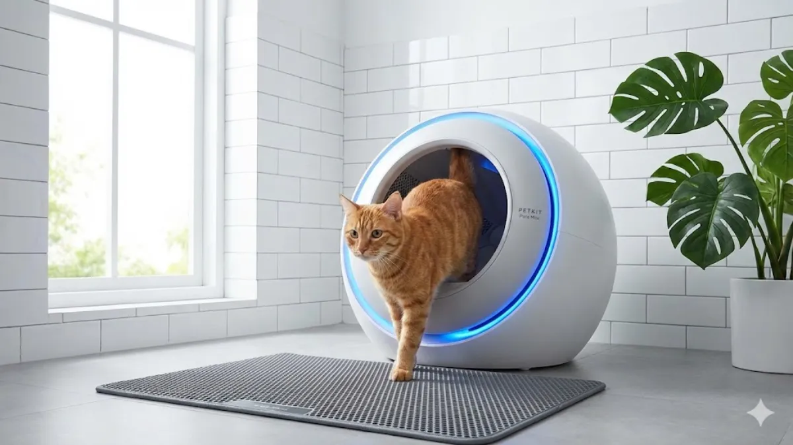
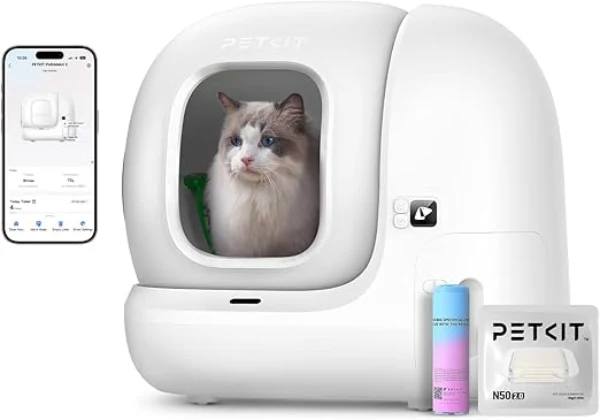
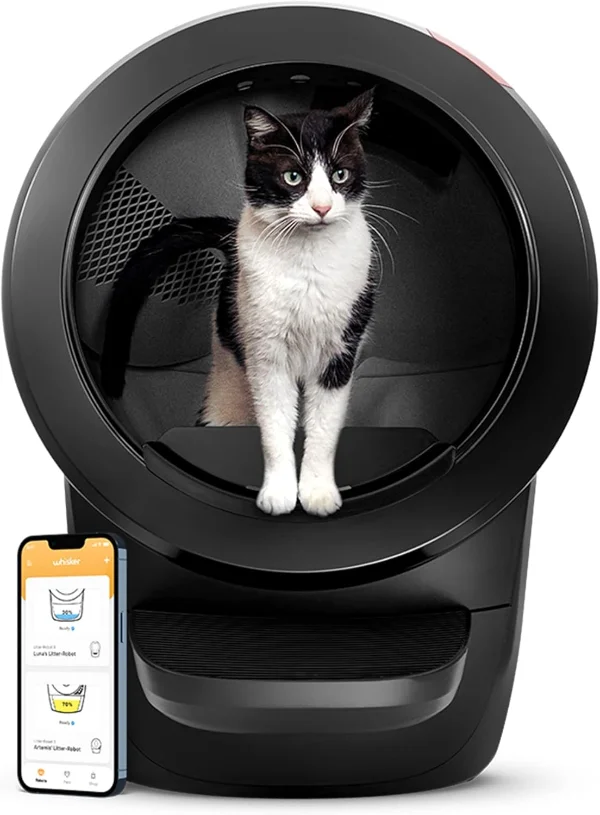
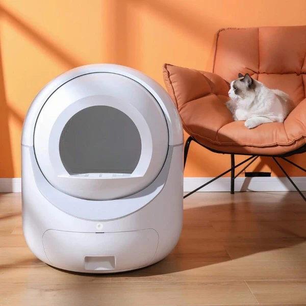

Adiós a la pala: Los 3 mejores areneros autolimpiables de 2026

La higiene felina ha dado un salto gigante. En 2026, los areneros robóticos ya no son un lujo caprichoso, sino una herramienta de salud que monitoriza a tu gato mientras tú te olvidas de las tareas desagradables.
1. Petkit Pura Max 2: El Líder en Salud

Modelo ideal para aquellos que lo quieren tener todo bajo control, gracias a su multitud de sensores que detectan el calor, el peso del gato, infrarrojos y antipellizcos. Todos estos datos recopilados son enviados regularmente a tu dispositivo móvil a través de la aplicación WI-FI 2,4G. Cuenta con depósito de 7 litros, suficiente para mantener la casa limpia y sin olores durante 15 días. Eso sí, no es apto para gatos de menos de 6 meses; el tamaño idóneo es entre 2 y 8 kilogramos de peso. Si al finalmente te decides por este arenero automático, tienes que saber que los filtros antiolor son extraíbles y se han de ir renovando una vez al mes, pero no te preocupes, puedes comprarlos fácilmente aquí. Vienen en packs de 3.
Monitorización de salud Pro, desodorización automática y muy seguro.
Ocupa bastante espacio y las bolsas oficiales son un gasto extra.
2. Litter-Robot 4: El Estándar de Lujo

Es, sin duda alguna, el mejor arenero autolimpiable si tienes varios felinos en casa; por eso le llaman "el tanque" del mercado. La clave está en su sistema de rotación, que es el más rápido y silencioso, permitiendo así que el arenero esté listo para el siguiente uso en cuestión de segundos. Además, la entrada al arenero es más grande que en otros modelos, para facilitar el trajín de varios gatos. Como en otros modelos, cuenta con WI-FI y una aplicación para registrar el peso y los hábitos del animal. Hay que añadir que, además de la limpieza automática y los filtros de carbono para absorber el olor, de manera opcional se pueden adquirir filtros "OdorTrap". Un sistema de filtración natural, que utiliza aceites vegetales para destruir las moléculas que causan el mal olor.
Capacidad masiva, el motor más silencioso y diseño icónico.
Es la inversión más alta de esta lista.
3. Smart Pet: La Opción Inteligente

Del gigante asiático Shein hay que destacar este modelo. No solo por su precio, que es el más bajo de esta lista, sino también por sus características. Sin ser el más grande (70 litros), si que es el que tiene el depósito de basura con mayor capacidad, hasta 10 litros. Como en los otros modelos de la lista, este también cuenta con WI-FI y aplicación en nuestro teléfono inteligente para monitorizar la salud de nuestras mascotas. Lo mejor de este modelo es que no hay que esperar un mes y medio para recibirlo. Lo tendremos en casa en 5 días hábiles, ya que se envía desde la Unión Europea.
Relación calidad-precio imbatible y diseño muy compacto.
La app es más sencilla y el diseño también.